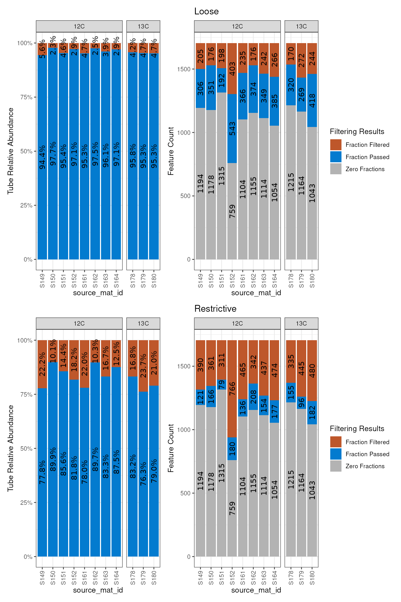

Background
After a qsip_data object is built and validated, the first step in
the analysis is to filter the features using
run_feature_filter(). This is done to narrow down the
sources for a specific comparison, and remove features that are not
useful for the analysis. Filtering has three sequential steps.
- identify relevant unlabeled and labeled
source_mat_idvalues for the comparison - score specific features considered as “present” in a source by using fraction count thresholds
- remove features that are not present in enough sources
Each step is detailed in the following sections.
Define the sources for a comparison
The first step in filtering is to identify the relevant source_mat_id
values for a specific comparison. The run_feature_filter()
arguments most important for this step are
unlabeled_source_mat_ids and
labeled_source_mat_ids. These are lists of source_mat_id
values that are used to filter the features. These can be explicitly
stated
(e.g. unlabeled_source_mat_ids = c("source1", "source2")),
or they can be identified by using some key terms that will identify all
sources satisfying that criteria
(e.g. unlabeled_source_mat_ids = "12C" or
labeled_source_mat_ids = "labeled").
There are internal validations for this step to make sure the sources
provided to a given argument make sense with the isotope designation in
the source data. For example, if you try to give a 13C source to the
unlabeled_source_mat_ids then there will be an error. If
you try to sources with a mixture of heavy istopes (e.g. 13C and 15N) to
the labeled_source_mat_ids then there will be an error.
This can happen either explicitly by providing the wrong source_mat_id
values, or if you have a mixture and choose “labeled” for
labeled_source_mat_ids. Having a mixture of unlabeled
source isotopes (e.g. 12C and 14N), however, is allowed and will not
give an error.
The group argument is optional and provides a place for a description
of that particular comparison
(e.g. group = "7 day drought treatment").
Score features as “present” in a source
Simplistically, a feature is considered present in a sample if there are counts for it. Features present in only a few samples, however, can lead to inaccurate estimates of the weighted average density (WAD) and should therefore be removed. For example, if a source has 20 sequenced samples (fractions), each with their own read depths, a feature appearing in only one sample may be because that sample happened to have the deepest sequencing. Therefore, it wouldn’t be expected to be an accurate representation of the true density values. Accordingly, a feature should be present in at least a few samples (let’s say 3) to have a more trustworthy WAD value.
The minimum fraction count can be defined differently for the
unlabeled and labeled samples using the
min_unlabeled_fractions and
min_labeled_fractions arguments, respectively. The function
uses these values to define a feature as “present” in a source if it is
found in at least that many samples (fractions).
Remove features that are not present in enough sources
The results of the last filtering step are used in this step to make
a final call for a feature_id in that comparison. If a
feature is found in the number of sources defined in
min_unlabeled_sources and min_labeled_sources,
then it will survive the filtering step and move on to resampling/EAF
calculations.
Example
As detailed in the main vignette, we can use the
show_comparison_groups() function to see the available
comparisons (this is just a prediction though!). We can run a few with
the test dataset (example_qsip_object) and see how the text
result changes to allow less through as we get more restrictive.
restrictive <- run_feature_filter(example_qsip_object,
unlabeled_source_mat_ids = get_all_by_isotope(example_qsip_object, "12C"),
labeled_source_mat_ids = c("S178", "S179", "S180"),
min_unlabeled_sources = 6,
min_labeled_sources = 3,
min_unlabeled_fractions = 6,
min_labeled_fractions = 6
)
#> There are initially 2030 unique feature_ids
#> 1705 of these have abundance in at least one fraction of one source_mat_id
#> =+=+=+=+=+=+=+=+=+=+=+=+=+=+=+=+=+=+=+=+=+=+=+=+=+
#> Filtering feature_ids by fraction...
#> 1519 unlabeled and 1417 labeled feature_ids were found in zero fractions in at least one source_mat_id
#> 1440 unlabeled and 830 labeled feature_ids were found in too few fractions in at least one source_mat_id
#> 299 unlabeled and 209 labeled feature_ids passed the fraction filter
#> In total, 346 unique feature_ids passed the fraction filtering requirements...
#> =+=+=+=+=+=+=+=+=+=+=+=+=+=+=+=+=+=+=+=+=+=+=+=+=+
#> Filtering feature_ids by source...
#> 47 unlabeled and 137 labeled feature_ids failed the source filter because they were found in zero sources
#> 196 unlabeled and 127 labeled feature_ids failed the source filter because they were found in too few sources
#> 103 unlabeled and 82 labeled feature_ids passed the source filter
#> =+=+=+=+=+=+=+=+=+=+=+=+=+=+=+=+=+=+=+=+=+=+=+=+=+
#> In total, 64 unique feature_ids passed all fraction and source filtering requirements
loose <- run_feature_filter(example_qsip_object,
unlabeled_source_mat_ids = get_all_by_isotope(example_qsip_object, "12C"),
labeled_source_mat_ids = c("S178", "S179", "S180"),
min_unlabeled_sources = 2,
min_labeled_sources = 2,
min_unlabeled_fractions = 2,
min_labeled_fractions = 2
)
#> There are initially 2030 unique feature_ids
#> 1705 of these have abundance in at least one fraction of one source_mat_id
#> =+=+=+=+=+=+=+=+=+=+=+=+=+=+=+=+=+=+=+=+=+=+=+=+=+
#> Filtering feature_ids by fraction...
#> 1519 unlabeled and 1417 labeled feature_ids were found in zero fractions in at least one source_mat_id
#> 1210 unlabeled and 584 labeled feature_ids were found in too few fractions in at least one source_mat_id
#> 780 unlabeled and 497 labeled feature_ids passed the fraction filter
#> In total, 870 unique feature_ids passed the fraction filtering requirements...
#> =+=+=+=+=+=+=+=+=+=+=+=+=+=+=+=+=+=+=+=+=+=+=+=+=+
#> Filtering feature_ids by source...
#> 90 unlabeled and 373 labeled feature_ids failed the source filter because they were found in zero sources
#> 245 unlabeled and 189 labeled feature_ids failed the source filter because they were found in too few sources
#> 535 unlabeled and 308 labeled feature_ids passed the source filter
#> =+=+=+=+=+=+=+=+=+=+=+=+=+=+=+=+=+=+=+=+=+=+=+=+=+
#> In total, 257 unique feature_ids passed all fraction and source filtering requirementsSo, 64 features pass the more restrictive criteria, but we get 257 by relaxing the criteria a little bit. The function messages are rather verbose, but they try to summarize the results of each step.
Note, relaxing the criteria too much can lead to errors later during
resampling. See vignette("resampling") for more information
or how to use the allow_failures = TRUE argument.
We can get a list of the features using
get_feature_ids(), and to restrict it to the post-filtering
results we add the filtered = TRUE argument.
get_feature_ids(restrictive, filtered = TRUE) |>
length()
#> [1] 64
get_feature_ids(loose, filtered = TRUE) |>
length()
#> [1] 257Inspecting the results
You can see the “fate” of a specific feature to see why it was or wasn’t included in the resulting object. First, we can get a few feature_ids that had different fates between the different filtering conditions.
diff_features = setdiff(get_feature_ids(loose, filtered = TRUE), get_feature_ids(restrictive, filtered = TRUE))ASV_100 is the first on the list that was present in the
loose filtering, but remove in the restrictive filtering. We can use the
get_filtered_feature_summary() function to look at the
filtering parameters affected the fate of ASV_100.
ASV_100_restrictive = get_filtered_feature_summary(restrictive, feature_id = "ASV_100")
ASV_100_loose = get_filtered_feature_summary(loose, feature_id = "ASV_100")The get_filtered_feature_summary() function returns a
list with information that summarize the filtering steps for a specific
feature.
-
$fraction_filter_summaryis the sample (fraction) count results -
$source_filter_summaryis the source count results -
$retainedis the final boolean call of whether the feature was retained or not
As expected (because we picked ASV_100 as an example of
differential filtering), the retained slot is
FALSE for the restrictive filtering and TRUE
for the loose filtering.
ASV_100_loose$retained
#> [1] TRUE
ASV_100_restrictive$retained
#> [1] FALSEWe can look at the fraction count summary for the feature in the two
filtering conditions in the $fraction_filter_summary slot.
This code combines the two sets of results, but just the last two
columns are of importance.
merge(
ASV_100_restrictive$fraction_filter_summary,
ASV_100_loose$fraction_filter_summary,
by = c("feature_id", "source_mat_id", "tube_rel_abundance", "type", "n_fractions"),
suffixes = c(" (restrictive)", " (loose)")
) |>
select(source_mat_id, type, contains("fraction"))
#> source_mat_id type n_fractions fraction_call (restrictive)
#> 1 S149 unlabeled 3 Fraction Filtered
#> 2 S150 unlabeled 10 Fraction Passed
#> 3 S151 unlabeled 7 Fraction Passed
#> 4 S152 unlabeled 6 Fraction Passed
#> 5 S161 unlabeled 7 Fraction Passed
#> 6 S162 unlabeled 13 Fraction Passed
#> 7 S163 unlabeled 6 Fraction Passed
#> 8 S164 unlabeled 9 Fraction Passed
#> 9 S178 labeled 4 Fraction Filtered
#> 10 S179 labeled 5 Fraction Filtered
#> 11 S180 labeled 7 Fraction Passed
#> fraction_call (loose)
#> 1 Fraction Passed
#> 2 Fraction Passed
#> 3 Fraction Passed
#> 4 Fraction Passed
#> 5 Fraction Passed
#> 6 Fraction Passed
#> 7 Fraction Passed
#> 8 Fraction Passed
#> 9 Fraction Passed
#> 10 Fraction Passed
#> 11 Fraction PassedAbove, you can see that in the unlabeled samples, only S149 had a difference between restrictive and loose, but 2 of the 3 labeled samples had differences and showed as “Fraction Filtered”.
Therefore, the sample (fraction) count filtering came to different conclusions…
merge(
ASV_100_restrictive$source_filter_summary,
ASV_100_loose$source_filter_summary,
by = c("feature_id", "type"),
suffixes = c("_restrictive", "_loose")
) |>
select(-mean_tube_rel_abundance_restrictive, -mean_tube_rel_abundance_loose)
#> feature_id type n_sources_restrictive source_call_restrictive
#> 1 ASV_100 labeled 1 Source Filtered
#> 2 ASV_100 unlabeled 7 Source Passed
#> n_sources_loose source_call_loose
#> 1 3 Source Passed
#> 2 8 Source PassedPlotting the results
Although there is a dramatic difference in the number of retained features between the two conditions, we can see how prevalent the features that are different are by plotting the fraction count distributions.
library(patchwork)
a = plot_filter_results(loose) + ggtitle("Loose")
b = plot_filter_results(restrictive) + ggtitle("Restrictive")
a / b
In the top plots, the blue is much larger than it is in the bottom plots, indicating more (obviously) made it through the loose filtering. But, even though there are 4x more features in the loose dataset, it is only about a 15-20% increase in terms of the abundance of features in the original dataset.